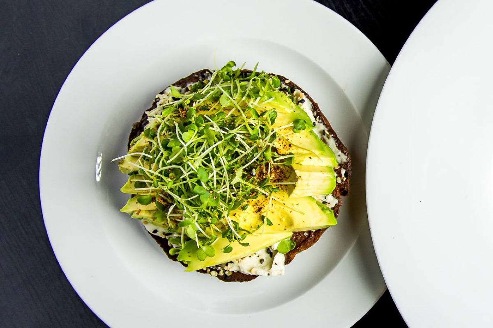

Healing through food, since 2012.
Founded by chef Sarah Ann Haugen, Vitalist began as a small superfood line and grew into a test kitchen, a café on Melrose Avenue in Los Angeles, and finally our home on Lake Minnetonka.
Every recipe was built on the same idea: organic, plant-forward food that makes you feel good.